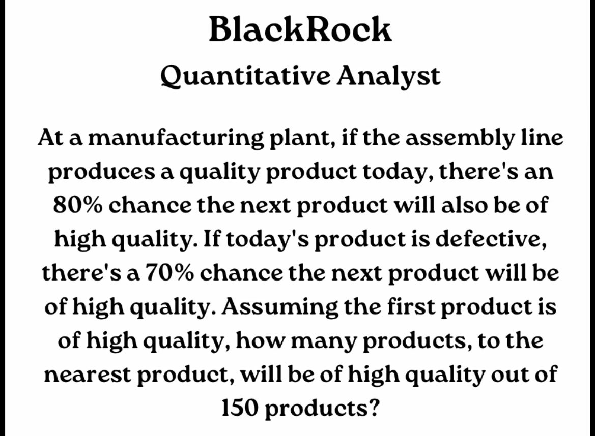

March 2025
202503221459
Okay so I found this cool problem:
Here is how I solved it:
This is a classic markov chain problem where we have to find the state probabilities of the system. I mapped out the transition matrix as the following:
| State 1 | State 2 | |
|---|---|---|
| State 1 | 0.8 | 0.7 |
| State 2 | 0.2 | 0.3 |
I then solved for the steady states by setting the equation πP = π where π is the steady state vector and P is the transition matrix. I then solved for π by setting up the equation πP = π and solving for π. The steady state vector is [0.777, 0.223].
We can easily calculate the expected number of high quality products by multiplying the steady state value 0.777 by 150, which gives us 117 high quality products.
202503182037
I've started on this cool project that involves using sentiment analysis to optimize portfolios. Should be really cool and fun and I'm really hoping to get it up and running asap
I already got a python implementation but it's too easy and boring. I'm gonna implement the portfolio optimization algorithm from scratch and reuse the same python sentiment model for analysis.
202503091129
I've had a lot of time to think about the kind of person I am. I am surrounded by individuals who can accomplish so much with so little. I want to do that. It may have been the absurd desire to be one of the cracked kids in my grade, or the unending desire to retire early, but I want to achieve as much as I possibly can. Not necessarily in grades, but in pursuits that cannot be easily replicated.
I've already finished my first project, and I've started doing the fundamental research for my second project (markov chains). I hope to get a few projects out by the time I reach second year and want a research position.